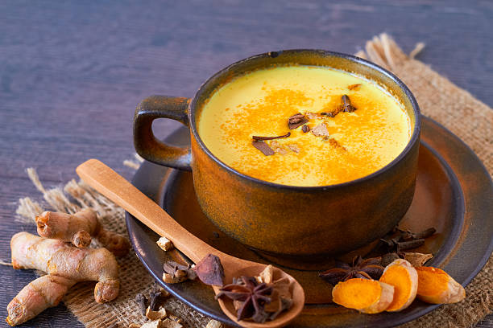

Turmeric Latte

Prep Time:
5 mins
Yield:
2
Ingredients
350ml almond milk (or any milk of your choice)
¼ tsp ground turmeric
¼ tsp ground cinnamon
¼ tsp ground ginger
½ tsp vanilla extract
1 tsp maple syrup
Grind of black pepper
Steps
Put all the ingredients in a saucepan and whisk constantly over a gentle heat, ideally with a milk frother if you have one.
Once hot, pour into mugs and sprinkle with a little more cinnamon to serve.
Enjoy!